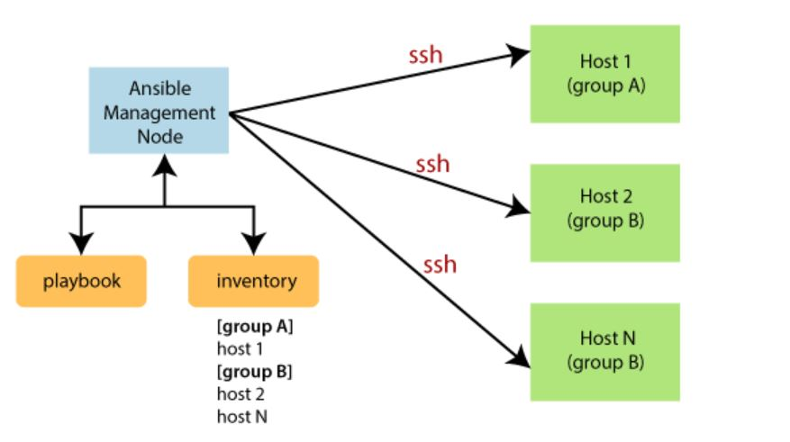

What is Ansible? 1. Ansible is an open-source IT engine that automates application deployment, cloud provisioning, intra service orchestration, and other IT tools. 2. Ansible is easy to deploy because it does not use any agents or custom security infrastructure on the client-side, and the work can be done by pushing modules to clients. These modules are executed locally on the client-side, and the output is pushed back to the Ansible server. 3. It can easily connect to clients using SSH-Keys, simplifying though the whole process. Client details, such as hostnames or IP addresses and SSH ports, are stored in the files, which are called inventory files. If you have created an inventory file and populated it, then Ansible can use it. 4. Ansible uses the playbook to describe automation jobs, and playbook, which uses simple language, i.e., YAML. YAML is a human-readable data serialization language & commonly used for configuration files, but it can be used in many applications where data is being stored. 5. A significant advantage is that even the IT infrastructure support guys can read and understand the playbook and debug if needed. 6. Ansible is designed for multi-tier deployment. Ansible does not manage one system at a time, and it models IT infrastructure by describing all of your systems are interrelated. Ansible is entirely agentless, which means Ansible works by connecting your nodes through SSH (by default). Ansible gives the option to you if you want another method for the connection like Kerberos. 7. Ansible pushes small programs after connecting to your nodes which are known as "Ansible Modules". Ansible runs that module on your nodes and removes them when finished. Ansible manages the inventory in simple text files (These are the host's files). Ansible uses the host file where one can group the hosts and can control the actions on a specific group in the playbooks.  Why Use Ansible? Here are some important reasons for using Ansible, such as: 1. Ansible is free to use by everyone. 2. Ansible is agentless and doesn't require anything special to be installed on the server, but just one thing you should have python installed (python3 is preferable). 3. Ansible is very consistent and lightweight, and no constraints regarding the operating system or underlying hardware are present. 4. It is very secure due to its agentless capabilities and open SSH security features. 5. Ansible does not need any special system administrator skills to install and use it. 6. Ansible has a smooth learning curve determined by the comprehensive documentation and easy to learn structure and configuration. 7. Its modularity regarding plugins, inventories, modules, and playbooks make Ansible perfect companion orchestrate large environments. Ansible History - Here are some essential points from the history of Ansible, such as: 1. Michael DeHaan developed Ansible, and the Ansible project began in February 2012. 2. The creator of Cobbler and Func is also the controller of the Fedora Unified network. 3. RedHat acquired the Ansible tool in 2015. 4. Ansible is included as part of the Fedora distribution of the Linux. 5. Ansible is also available for RedHat Enterprise Linux, Debian, CentOS, Oracle Linux, and Scientific Linux via Extra Packages for Enterprise Linux (EPEL) and Ubuntu as well as for other operating systems.